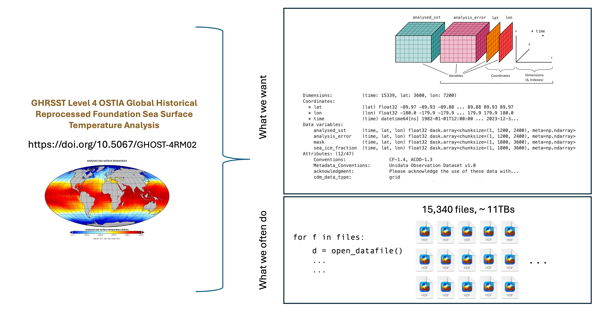
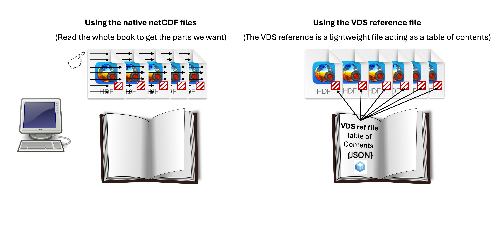
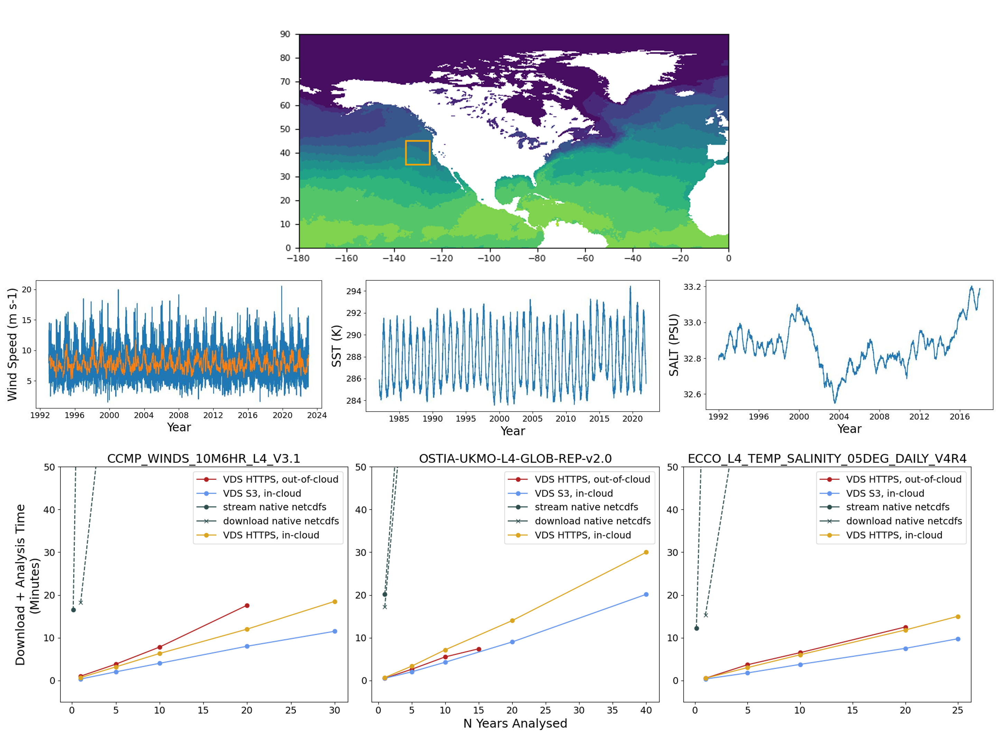
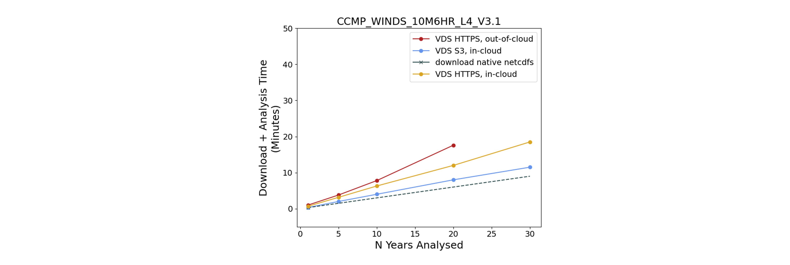

Using Virtual Datasets
Using Virtual Datasets for Cloud-Optimized Access at PO.DAAC
Contents:
- What is a Virtual Dataset and How Does it Improve / Simplify Data Access?
- Using Virtual Datasets
- Available Products
- Guidance on Scope of Usability - Don’t Skip!
- Future Goals
- Resources
- Benchmarking
What is a Virtual Dataset and How Does it Improve / Simplify Data Access?
There are many resources available to learn about virtual datasets (VDS’s) from a technical standpoint. Here we try to summarize their utility for Earthdata users with a couple of analogies, and provide links in the Resources section for those who want to understand the technology in depth.
First, VDS’s allow users to interact with entire datasets programmatically, e.g. in their Jupyter notebooks and Python scripts, bypassing the task of wrangling and merging data from all the individual files first. Take for example one of PO.DAAC’s gridded sea surface temperature (SST) datasets from the OSTIA project. It contains >15,000 files and is over 11 TB’s. Ideally we want, in a single line of code, to have access to all the variables in the dataset (e.g. SST, SST uncertainty, and masks) as neatly organized multidimensional arrays (in this case 3D for latitude, longitude, and time), and then subset to the desired region and timerange. In the past though, we likely had to use a for-loop, or similar, to extract data from each file.

VDS’s eliminate the need to open and work with individual files in this way.
Second, VDS’s greatly reduce data access times. The VDS itself is a lightweight “sidecar” reference file filled with metadata that enables optimized access. If one thinks of the individual files in a data set as pages in a book, then the traditional method of data access would be analogous to reading the whole book cover to cover, even if just a small geographic subset of each file is needed. In contrast, the VDS reference file acts as a table of contents, allowing the computer to jump to the desired parts of the file. The Benchmarking Section shows that even simple computations are sped up by an order of magnitude.

Summarizing the points above, and adding some additional ones, the benefits of VDS’s include:
- Enabling “Analysis Ready, Cloud Optimized” (ARCO) Data: By optimizing data for cloud access, cloud optimized data dramatically reduces the need for users to download massive datasets, prepare them for analysis, and manage local storage.
- Access in and outside of the Cloud: Being in a cloud environment is not required! You can access these large datasets from your own hardware through normal mechanisms like HTTPS, although S3 access yields the best compute performance.
- Improving Performance and Reducing Computation Burden: Users can quickly access and subset data directly from cloud storage, leading to faster exploration and analysis. Only the desired subset of data is downloaded, minimizing egress time, computational resources, and costs.
- Simplifying Data Integration: VDS’s allows for the seamless integration of different data products regardless of their original format or location, simplifying complex research workflows.
- This safeguards the future of NASA data while also enhancing the ways in which users can access and utilize the data.
Using Virtual Datasets
To date we have explored accessing VDS’s programmatically via Jupyter notebooks, using the Xarray package for opening data. The quickest way to get up to speed with this method is to check out the starter notebook here. As with other access methods, you need an Earthdata Login account. Other than that, the majority of the code to obtain credentials is boiler-plate and the only action item on the user is to find the VDS link for the dataset they want to use. Currently you can find the link using the table in the Available Products section below. In the future, the links will be advertised on dataset landing pages and searchable in CMR metadata.
Additionally, the following notebook demonstrates using VDS’s for more involved computations:
Even in this cases, the access pattern is the same as for the starter notebook - loading the data with Xarray is simple. At that point you are only limited by your knowledge of Python programming, key scientific computing packages like Xarray, NumPy, and Scipy, and using Dask arrays with parallel computing. Check out the Resources section to find links to material on some of those areas.
Available Products
Note that PO.DAAC’s VDS’s are not new datasets - they are VDS-versions of datasets that already existed on PO.DAAC. Currently, we host VDS’s covering the following parameters:
- Ocean Currents
- Ocean Winds
- Sea Surface Height
- Ocean Salinity
- Sea Surface Temperature
VDS’s are located in PO.DAAC’s podaac-ops-cumulus-public bucket with the following path convention:
https://archive.podaac.earthdata.nasa.gov/podaac-ops-cumulus-public/virtual_collections/[SHORTNAME]/[VDS_FILENAME]
where [SHORTNAME] is the dataset short name, and [VDS_FILENAME] follows the format:
- For S3 links (in-cloud): [SHORTNAME]_virtual_s3.json
- For HTTPS links (out-of-cloud): [SHORTNAME]_virtual_https.json
In the future, the json extension may be replaced by the new icechunk format.
The table below provides links to our currently offered datasets, for both in-cloud and out-of-cloud usage (separate VDS files). This table is meant to be a temporary method of finding the links, and will ultimately be replaced by advertising them on the dataset landing pages and making them searchable with CMR.
| Dataset Title (Shortname) |
VDS link(s) | VDS File Type | Time range covered | |
|---|---|---|---|---|
| RSS CCMP 6-Hourly 10 Meter Surface Winds Level 4 Version 3.1 (CCMP_WINDS_10M6HR_L4_V3.1) |
Link to HTTPS VDS (out-of-cloud use) Link to S3 VDS (in-cloud use) |
JSON | 01/02/1993 - 03/31/2025 | |
| ECCO Ocean Temperature and Salinity - Daily Mean 0.5 Degree (Version 4 Release 4) (ECCO_L4_TEMP_SALINITY_05DEG_DAILY_V4R4) |
Link to HTTPS VDS (out-of-cloud use) Link to S3 VDS (in-cloud use) |
JSON | 01/01/1992 - 12/31/2017 | |
| ECCO Ocean Velocity - Daily Mean 0.5 Degree (Version 4 Release 4) (ECCO_L4_OCEAN_VEL_05DEG_DAILY_V4R4) |
Link to HTTPS VDS (out-of-cloud use) Link to S3 VDS (in-cloud use) |
JSON | 01/01/1992 - 12/31/2017 | |
| ECCO Ocean Bottom Pressure - Daily Mean 0.5 Degree (Version 4 Release 4b) (ECCO_L4_OBP_05DEG_DAILY_V4R4B) |
Link to HTTPS VDS (out-of-cloud use) Link to S3 VDS (in-cloud use) |
JSON | 01/01/1992 - 12/31/2017 | |
| ECCO Sea Surface Height - Daily Mean 0.5 Degree (Version 4 Release 4b) (ECCO_L4_SSH_05DEG_DAILY_V4R4B) |
Link to HTTPS VDS (out-of-cloud use) Link to S3 VDS (in-cloud use) |
JSON | 01/01/1992 - 12/31/2017 | |
| GHRSST Level 4 MUR 0.25deg Global Foundation Sea Surface Temperature Analysis (v4.2) (MUR25-JPL-L4-GLOB-v04.2) NOTE: The _FillValue for the data in this VDS are set to the wrong value and software will not correctly mask the data. This is only an issue if your analysis covers masked areas such as sea ice or land. Alternatively, you can manually mask the data using Xarray or NumPy built in functions. |
Link to HTTPS VDS (out-of-cloud use) Link to S3 VDS (in-cloud use) |
JSON | 09/01/2002 - 07/20/2025 | |
| GHRSST Level 4 OSTIA Global Historical Reprocessed Foundation Sea Surface Temperature Analysis produced by the UK Meteorological Office (OSTIA-UKMO-L4-GLOB-REP-v2.0) NOTE: The _FillValue for the data in this VDS are set to the wrong value (-54.5300061 rather than -32768.0) and software will not correctly mask the data. This is only an issue if your analysis covers masked areas such as sea ice or land. Alternatively, you can manually mask the data using Xarray or NumPy built in functions. |
Link to HTTPS VDS (out-of-cloud use) Link to S3 VDS (in-cloud use) |
JSON | 01/01/1982 - 12/31/2023 | |
| Daily NeurOST L4 Sea Surface Height and Surface Geostrophic Currents (NEUROST_SSH-SST_L4_V2024.0) NOTE: Currently only available with HTTPS links. This will work for both in-cloud and out-of-cloud, with just slightly less performance than using S3 links. |
Link to HTTPS VDS (out-of-cloud use) | JSON | 01/02/2010 - 12/11/2024 | |
| RSS SMAP Level 3 Sea Surface Salinity Standard Mapped Image 8-Day Running Mean V6.0 Validated Dataset (SMAP_RSS_L3_SSS_SMI_8DAY-RUNNINGMEAN_V6) |
Link to HTTPS VDS (out-of-cloud use) Link to S3 VDS (in-cloud use) |
JSON | 04/01/2015 - 06/27/2025 | |
| JPL GRACE and GRACE-FO Mascon Ocean, Ice, and Hydrology (TELLUS_GRAC-GRFO_MASCON_CRI_GRID_RL06.3_V4) NOTE: Currently only available with HTTPS links. This will work for both in-cloud and out-of-cloud, with just slightly less performance than using S3 links (also this is a small dataset). |
Link to HTTPS VDS (out-of-cloud use) | JSON | 04/17/2002 - 05/16/2025 |
Guidance on Scope of Usability - Don’t Skip!
- As mentioned above, these are not new datasets - they are VDS-versions of datasets that already existed on PO.DAAC. The table above links to the dataset landing pages of the pre-existing datasets, as will likely be the standard going forward. Therefore, for documentation, metadata, citations, etc, please consult those landing pages. If you use VDS’s for your work, please cite the dataset!
- The VDS lets you jump around and subset any part of a large dataset rapidly, but don’t mistake that for being able to crunch ALL the data rapidly. For larger-than-memory computations, you will still want to have access to more compute power and parallel computing techniques.
- Most datasets are not the full record and will not contain any data delivered to PO.DAAC after the creation of these VDS’s. “Forward-streaming” VDS’s will be a future capability.
- Be aware of the time span available for each record. If you try and select data outside of that timespan, you won’t get an error, you simply get no data chunks returned to you.
- VDS’s (the HTTPS versions) can be used out-of-cloud for easy and efficient data exploration as well as smaller computations. We’ve found that for larger computations we hit a limit with the amount of data we are allowed to access at once. Therefore, for larger computations with VDS’s you will need to be in-cloud.
- Credentials to a dataset are valid for an hour (similarly to our original datasets), so if your computation runs past an hour, you may lose access and need to obtain new credentials - e.g. re-run
earthaccess.login(). - We found that the VDS’s sometimes will not work on JPL’s VPN, likely due to the high level of security on it. If you are using a very secure VPN and run into access issues, try jumping off it.
Future Goals
This technology is actively being developmed. Please let us know if you run into issues, we are monitoring this tech to improve it. Also, we may be updating this Cookbook chapter and notebooks within frequently as the tech progresses.
We aim to expand the number and types of datasets offered with VDS capability:
- Wider variety of L3 and L4 datasets.
- Level 2 products. We have tested VDS technology with L2 and it can work, although currently it will not work with all collections due to file formatting.
- Datasets with HDF groups.
- Composite VDS products. For example, the ECCO VDS’s could be combined into a single VDS with the variables from all the original datasets combined.
- Forward streaming records - updating VDS’s as the latest data become available.
The wider variety of products above will be easier to support with the emerging icechunk format for VDS’s, which we are also actively looking into.
Another goal is integration of VDS search and access capabilities with the earthaccess package, which would simplify the user’s code even further, e.g.
import xarray as xr
import earthaccess
earthaccess.login()
vds_mapper = earthaccess.get_virtual_reference(shortname, **kwargs)
data = xr.open_dataset(
vds_mapper, engine="zarr", chunks={},
backend_kwargs={"consolidated": False}
)Resources
As mentioned above, opening a VDS is easy with the Xarray package. At that point you are mostly limited by your knowledge of Xarray built-in functions, Dask, or extracting Dask/Numpy Arrays from an Xarray object for use with other Python packages. Fortunately the Xarray + Dask documentation is good, here are a few links to get started:
Xarray in 45 minutes: https://tutorial.xarray.dev/overview/xarray-in-45-min.html
Xarray full documentation, user guide, API, etc: https://docs.xarray.dev/en/stable/index.html
High-level intro to dask and basic compatibility with Xarray: https://tutorial.xarray.dev/intermediate/xarray_and_dask.html
Further functionality of Xarray + Dask: https://docs.xarray.dev/en/stable/user-guide/dask.html
If you want to learn more about virtual datasets and cloud-optimized formats generally, there are many resources available. For a high level overview, check out this page Cloud-Optimized Geospatial Formats Guide, or for details on the package used to create virtual datasets, check out virtualizarr’s read-the-docs page. Anyone can create a VDS for a new dataset if they are inclined (and if the underlying netCDF/HDF’s are formatted appropriately). There is a bit of a learning curve, you can check out our virtualizarr recipes notebook and references therein to get started.
Benchmarking
We performed a benchmarking test, comparing a basic access and computation workflow using the VDS’s vs traditional methods of either streaming or downloading the native netCDF files. This was performed with three data sets: CCMP_WINDS_10M6HR_L4_V3.1 (ocean surface winds), OSTIA-UKMO-L4-GLOB-REP-v2.0 (sea surface temperature), and ECCO_L4_TEMP_SALINITY_05DEG_DAILY_V4R4 (ocean salinity). The workflow included lazy-loading the data, taking a regional subset 10° x 10° window off the USA west coast, and computing the regional mean average for one of the variables over each time step. This was performed for the entire record as well as 1, 5, 10, 20 and years.
We ran three VDS configurations, one out-of-cloud (necessitating HTTPS endpoints), and two in-cloud (using both the HTTPS and S3 endpoints). Results for any of the VDS methods show an order of magnitude improvement on this simple computation. However, using VDS’s out-of-cloud has limitations on the size of the computation. For example we could not apply our analysis to more than 15-20 years of data without running into errors which seemed to be from generating too many data requests at once. Also, once data are downloaded locally the computations are as fast or faster than the VDS’s. However, we do note that this is a computation that can be applied to each file separately in a for-loop. Alternately, if we wanted to perform a computation that needed access to data from all files simultaneously - e.g. a 20-year latitude-longitude map of ocean wind standard deviations - a simple for-loop would not achieve this and it’s unclear if local access methods could conveniently handle this.

